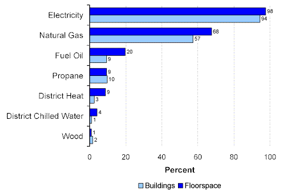
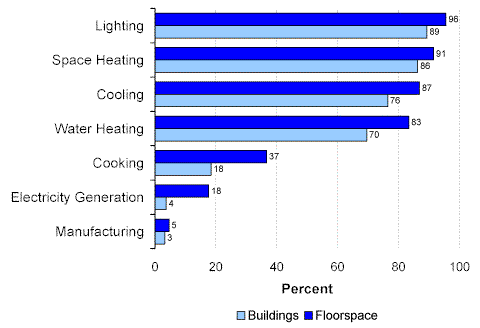

Topics:
Energy Sources and End Uses
Energy Sources and End Uses
CBECS collects information that is used to answer questions about the use of energy in the commercial buildings sector. Questions such as: What kind of energy sources are used? What is energy used for? and What kinds of equipment use energy?
Energy Sources
Nearly all commercial buildings used at least one source of energy for some end use (Figure 1). Electricity was the most commonly used energy source in commercial buildings (94 percent of buildings comprising 98 percent of commercial floorspace). More than half of commercial buildings (57 percent) and two-thirds of commercial floorspace (68 percent) were served by natural gas. Three sources—fuel oil, district heat, and district chilled water—when used, were used more often in larger buildings.
Figure 1. Energy Sources Used in Commercial Buildings by Percent of Floorspace and Buildings, 1999 Energy Information Administration
Commercial Buildings Energy Consumption Survey
Energy End Uses
Four end uses—lighting, space heating, cooling, and water heating—were found in more than two-thirds of commercial buildings (and more than 83 percent of floorspace) (Figure 2). Of those four, lighting and space heating were found in more than 85 percent of buildings.
Figure 2. End Uses in Commercial Buildings by Percent of Floorspace and Buildings, 1999 Energy Information Administration
Commercial Buildings Energy Consumption Survey
Next section, “End-Use Equipment”
Return to:
“1999 CBECS—Commercial Buildings Characteristics”
Specific questions may be directed to:
Alan Swenson
alan.swenson@eia.doe.gov
Release date: May 21, 2002
http://www.eia.gov/consumption/commercial/data/archive/cbecs/char99/sources.html
If you are having any technical problems with this site, please contact the EIA webmaster at wmaster@eia.doe.gov.